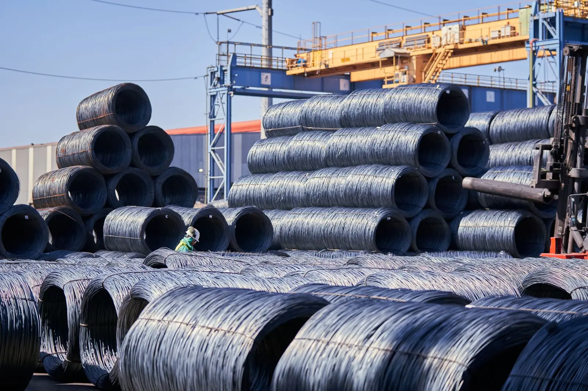

Products
What recycled steel becomes
Steel is the world's most recycled material. Around 650–680 million tonnes of scrap go back through steelmaking every year, and an electric arc furnace can run on 100% scrap. The steel we recover does not end as scrap — it ends as buildings, bridges, cars and rebar.
The scale
1.74 billion tonnes a year
Worldwide steel use in 2024, according to the World Steel Association. Where it went is the map of where recycled steel goes.
End uses
The twenty biggest homes for recycled metal
An approximate ranking by the size of each end-use market and its ability to take recycled steel, aluminium, copper and lead. There is no single authoritative global table of finished products by recycled-metal content; this is the practical order.
- Structural steel for buildingsSteel
- Reinforcing bar for concreteSteel
- Beams, columns and structural sectionsSteel
- Bridges and major infrastructureSteel
- Cars, trucks and commercial vehiclesSteel · aluminium
- Machinery and industrial equipmentSteel · cast iron
- Steel sheet, plate and coilSteel
- Pipes and tubesSteel · iron
- Rail tracks and railway infrastructureSteel
- Shipping containersSteel
- Ships and marine vesselsSteel · aluminium
- Aluminium automotive castings — engine blocksAluminium
- Aluminium building products — windows, cladding, roofingAluminium
- Electrical cable and wiringCopper · aluminium
- Household appliancesSteel · aluminium · copper
- Steel drums, bins, tanks and industrial containersSteel
- Aluminium beverage cansAluminium
- Lead-acid batteriesLead
- Motors, transformers and generatorsCopper · steel · aluminium
- Metal furniture, shelving, racking and storageSteel · aluminium
Back through the furnace
Scrap goes straight back into steelmaking and comes out as an entirely different product — rebar, sections, sheet, wire. Electric arc furnaces can run on up to 100% scrap.
Cans to engine blocks
Recycled aluminium from transport, packaging, buildings, engineering and cable goes into engine blocks, vehicle castings, cladding and automotive sheet (International Aluminium Institute).
Interchangeable with new
Recycled copper is effectively interchangeable with primary copper. Its biggest uses are power generation and transmission (44%), construction (20%), appliances and electronics (14%) and transport (12%).

The opportunity
Scrap to rebar, and back into Australian construction
Reinforcing bar is the second-largest home for recycled steel on earth, and it is made in Australia. That makes a circle worth closing:
Global Steel does not need to own a mill to make that circle real. We aggregate and process scrap to a defined specification, partner with a steelmaker, and — as volumes allow — market a range of products made from the resulting recycled steel.
Status: the supply side of this circle runs today. The mill partnership and branded products are the roadmap, not a current offer.
Where this goes
Global Steel → metal recycling → recycled products
The interesting question is not "what consumes the most recycled metal?" It is "what finished products could be made from the metal we recover?" These are the ones that fit the steel we process — heavy, simple, high-volume, and built in Australia.
Candidate products for manufacture from recycled steel, aluminium and copper — a working list, not a catalogue. Bins, stillages, cages and racking are products the group already buys; making them from its own recovered steel is the obvious first loop.
Making something from recycled steel?
Mills, rollers and fabricators who want a documented Australian scrap supply — or partners who want their metal to come back as product — talk to us.